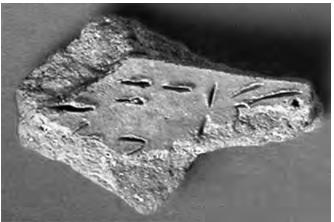
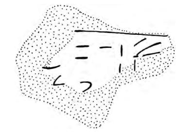

-
KH101
Names
Aliases for the inscription.
KH101, KH 101
Support
Type of Object.
Tablet
Location
Site where object was found.
Khania
Findspot
Location at Site.
Unavailable


Scribe
Writer of Inscription.
Unavailable
Context
Approximate Date of Inscription.
Unavailable
Dimensions
Height x Length x Thickness.
Catalogue
Museum Reference Number.
Readings
1 1 0 30 none
1 1 0 2 none
1 1 1 CYP none
2 2 2 ³⁄₄ none
Linear A Transcription
A Linear A transcription with words parsed separately.
Line breaks match the inscription.
𐄒𐄈𐙗
𐝆𐝃
ASCII Transcription
An ASCII transcription with words parsed separately.
Line breaks match the inscription.
302CYP
³⁄₄
Linear A Tabulation
A Linear A transcription with words parsed separately.
Line breaks are logical, e.g. to represent a list.
𐄒𐄈𐙗
𐝆𐝃
ASCII Tabulation
An ASCII transcription with words parsed separately.
Line breaks are logical, e.g. to represent a list.
302CYP
³⁄₄
KH 101
, page tablet? (KH MUS.); AR 58, 2011-2012, 73
[Katre St 1]
text not given
Commentary © John Younger
References
https://www.ijte.org/articoli.php?chiave=201433301&rivista=333